What
Model railways are quite popular in the region I live and I have a faint memory of my grandfather setting one up for me as a young child. Eventually I had to get one, so I bought an old used Märklin model railway train with some tracks and set them up.

Contents
Contents
When
After seeing another such model railway at a guided tour I started watching YouTube videos of people setting them up and designing the surroundings - painting trees, buildings, pedestrians all at 1:87-scale. Some of the videos are almost hypnotic to watch.
So I found a train and some tracks on eBay and ordered them.
Background
History
The Märklin-brand of model railways became quite popular after the first trains were released in 1891 [1].
Background
Since I was buying a used model railway and didn’t inherit it or similar, I had to make choices on which train from which era, which tracks, power supply and so forth.
Train and track sizes
When searching online it quickly becomes clear that the H0 track spacing for 1:87-scale trains has become de facto standard. There are smaller and larger model train systems, but H0 is by far the most common. So settling for H0 seems reasonable.
Track electronics and wiring
It’s interesting that the Lego train set I had as a kid has roughly 9V+ and - applied to the left and right track.
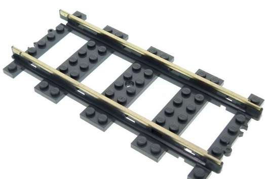This configuration leads to forbidden track layouts due to electical shorting. They had to mention this in the manual.
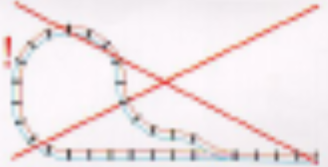 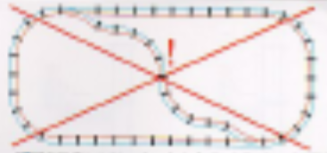Märklin, or the “Ludwig Lutz” toy company they had acquired also in 1891 [1] designed their tracks more cleverly: the outer tracks are all negative voltage. In the center there is an additional wire, that the sliding contact of the train connects to, for positive voltage.
The earily trains run on 9 to 16 V alternating current (AC), as can be seen on the power supply.
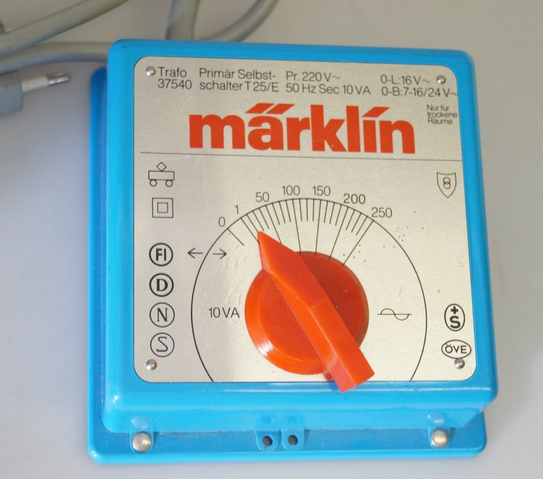In order to switch direction the early trains would use a pulse at 24 V which is why the power supply supports also pulses at 24 V.
Running Märklin Trains on DC instead of AC
Reading online [4] I learned that the trains work just fine on direct current (DC) aswell.
Speculation: The reason for this is probably, because the trains are designed to handle brief connection interruptions. In order to do this they must contain some form of energy storage - likely a large capcitor. Since the capacitor requires DC, there have to be diodes in place. This results in the trains having a bridge rectifier circuit inside. If we apply AC it the current travels through either of the current depending on phase. If we apply DC and there is nothing to rectify, the current passes right through.
Either way this is a significant advantage for me as it greatily simplifies an own power supply build. I know I can easily design a micro-controller circuit board to control these old AC trains.
Digital Trains
More modern Märklin train sets now employ digital decoders in the train. This allows individual control of the trains, soundeffects and lighting control.
I thought about going with a modern train set instead, but somehow I like the old style trains. The longer history means there are also more different trains to choose from and cheaper prices on online auction houses.
The digital trains really play out their advantage on large setups with many trains and railway switch points. Wiring is alot more clean and simple with addressable components on a common electrical bus, but wiring effort has never kept me away from a project.
Multiple trains on old analog model train systems
I could separate the tracks into sections and control them with my own circuitry. Or put modify the trains with small bluetooth disconnect switches, as a hack to control individual trains.
Normally, on a small setup, there is no reason to have more than 2 trains and to not run them at the same time. I currently don’t have the space or budget or time for a large set up.
Track types
After having established the track sizes, electrical wiring and power supply, I found there are different types of tracks [3]:
- B-tracks (1935 to 1956): with continuous middle contact
- M-tracks (1957 to 2001): first with continious contacts, later point contacts. They have a track bed integrated.
- K-tracks (series 21xx 1969-1980, series 22xx since 1980): point contacts and without track bed
The K-tracks are considered more “professional”. They come without the track bed are are more suited for adding own gravel and gras for aesthetics.
The point contacts instead of a continuous middle contact make them look more authentic. The trains have a long sliding contact at the bottom that overs 8 point contacts at a given time, so its not a disadvantage.
There are special purpose C-tracks [5], but for now I decided to stick to the most common track types for availablity, compatibility and price.
Track Plan
After settling for the type of tracks, I needed to find out how much I would need to order and how much I can fit on our table.
So I searched online and sure enough there are software tools made by hobbyists where you can draw and plan model railyway setups. One such tool is “3D Modelleisenbahnstudio”.
By measuring the table and then placing tracks of known length as horizontal and vertical axes, I can use the software to draw up a rough track plan that will fit on the table.
So I know I’ll need 12 curved tracks for a circle and perhaps some straight tracks.
Software Simulators
The “3D Modelleisenbahnstudio” software was so much fun to use I actually spend some hours drawing up a virtual model train railway in it.
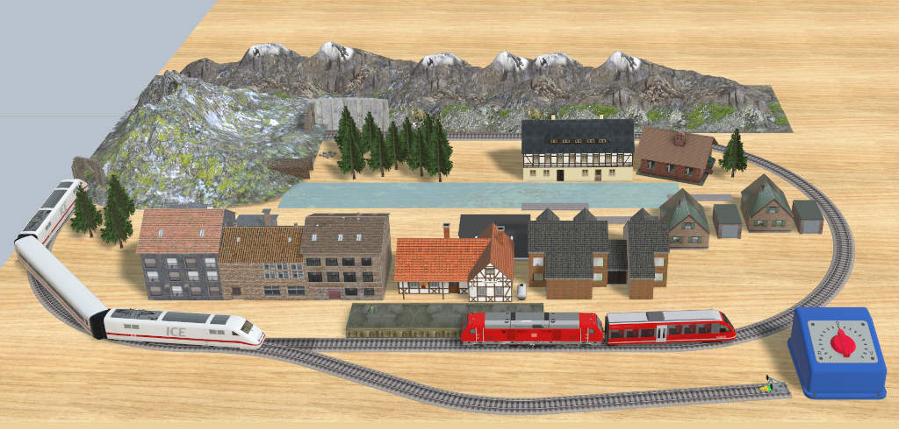In “3D Modelleisenbahnstudio” you can even configure moving trains and automatic track switchers.
This brings up memories of the “StellwerkSim” (see Railroad Signal Tower) where you can simulatre railroad switching systems. The goal is to free critical sections to allow trains to pass through a simulated central station.
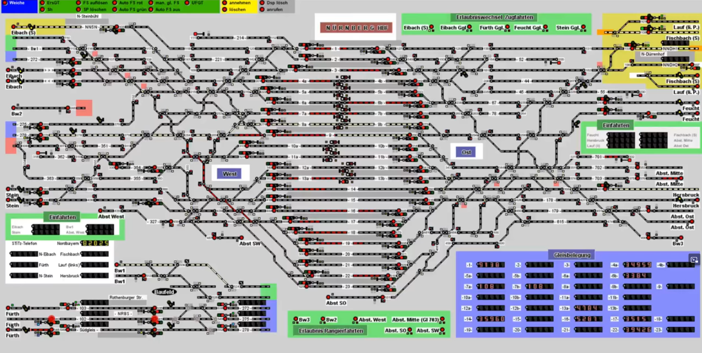Somehow model railway have so dedicated hobbyists that unbelievable effort is put into software, the setups, train modifications, painting and so on.
Choice of Train
For the early Märklin trains the steam engine models were very popular. Due to their abundance they are also by far the cheapest on online auction houses. These can be had for around 25 Eur, so I settled for one of those as a starting point.
These Märklin model railway systems can get expensive quickly. Some more detailed trains can cost four digits. I’d asume there are even limited-editions for five or more digits prices.
I went with something that works to play around and to see if this hobby is actually for me. None of my friends, family or myself included would likely be able to tell the difference.
Purchase
After having decided what components I want to buy I settled for this:
- Train: the “Märklin 3000 BR 89 Steam Engine”. I got it used and tested to be fully-functional at an online auction house for 22,95 Eur from a model railway shop. The promise held up. It runs perfectly as we’ll see later.
- Tracks: a set of curved K-tracks. I don’t have straight tracks, but when you think about it, curved tracks are much more useful and I can build a circle for starters. I got 52 used curved K-tracks fpr 34,95 Eur from that same store.
- Power Supply: I will use my DC Lab Power Supply first, then design a micro-controller circuit. Variable speed by Pulse-Width-Modulation (PWM) should be possible. The 24 V burst for switching directions could come from a boost converter.
In total this sets me back 57.91 Eur, which is well worth it.
How
Setup
Some days after my order I received the train and tracks.
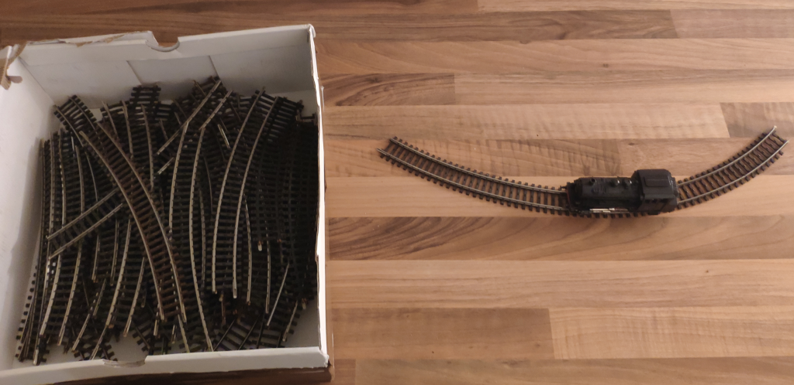Making Contact
In order to test the train I connected the lab power supply to a short track section.
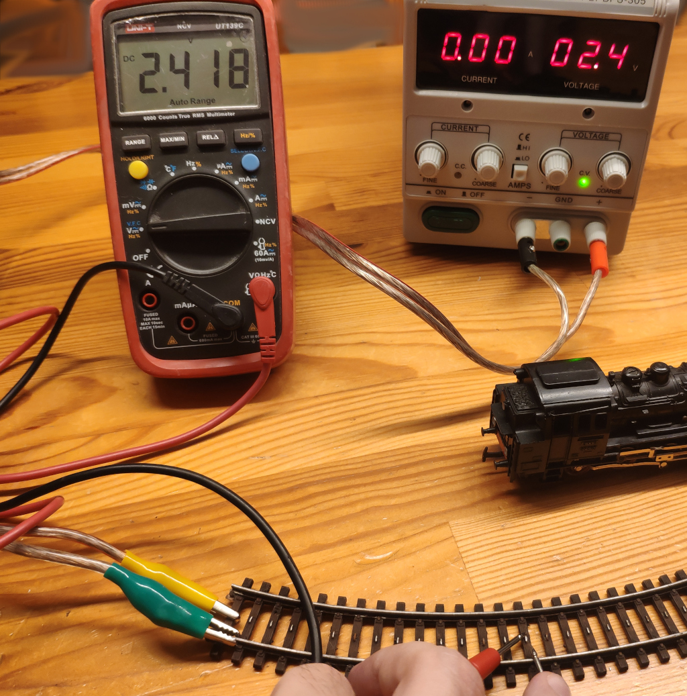That didn’t work at first, even though I could clearly measuire the voltage between the sides of the track and the point contacts in the center.
Just turning the train around and connecting touching the contacts of the train directly worked fine, so it had to be a contact issue of the tracks.
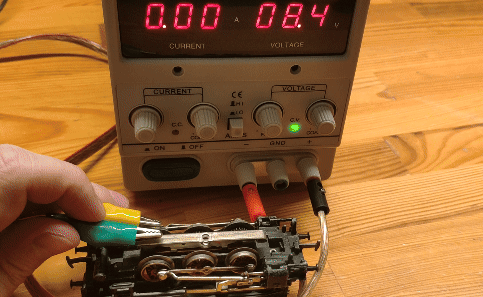I found some tracks to be working while others would not.
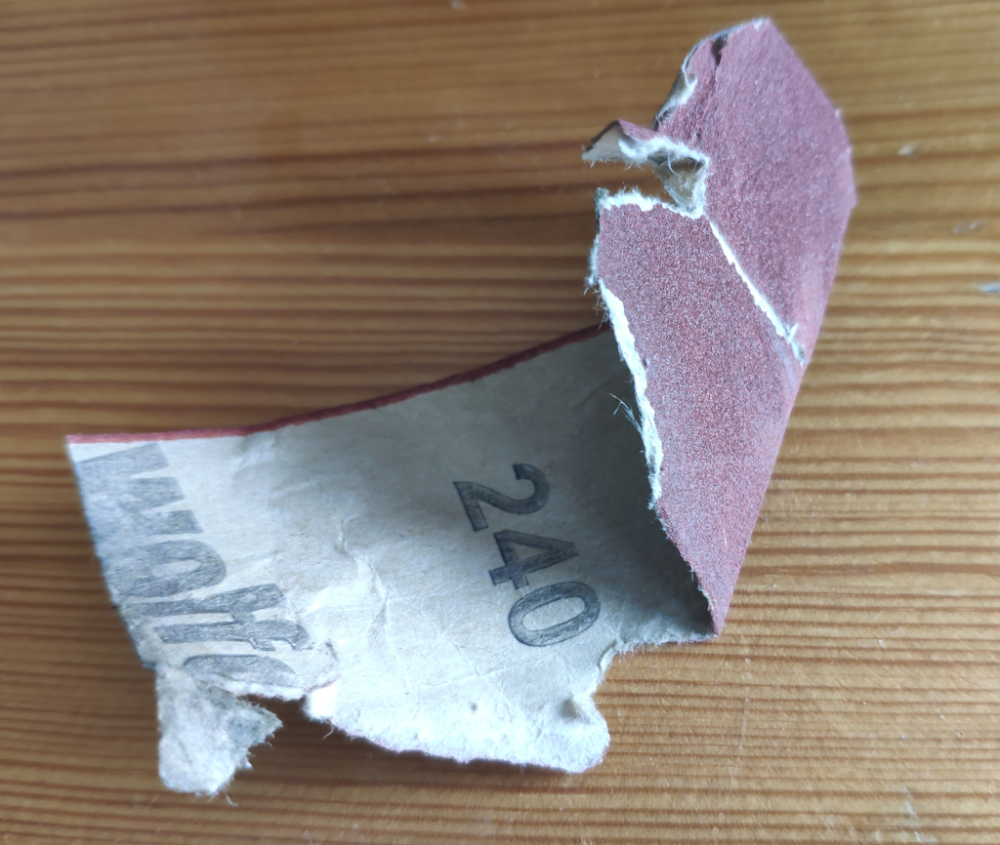Eventually I realised there was rust, perhaps paint and all sorts of gunk on some of the point contacts. The solution here was to just sand them down with a really fine 240 grain sandpaper.
After the sandpaper treatment almost all of the tracks work fine - even though they are probably 40 to 55 years old.
Eventually we set up a track circle that the train travels on without any problems.
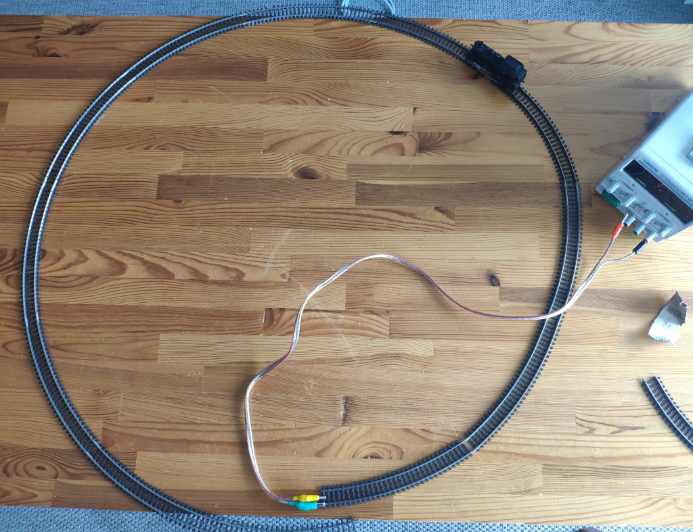As you can see it barely fits on our dining table.
Control & Power Supply
In order to power the model railway more conveniently without having to use the lab power supply, I had to come up with some sort of electircal circuit. Ideally it would control direction and speed from a microcontroller for maximum flexiblity. We can then pre-program behaviours, control via USB serial connection from a computer or add buttons for human interaction.
Schematic
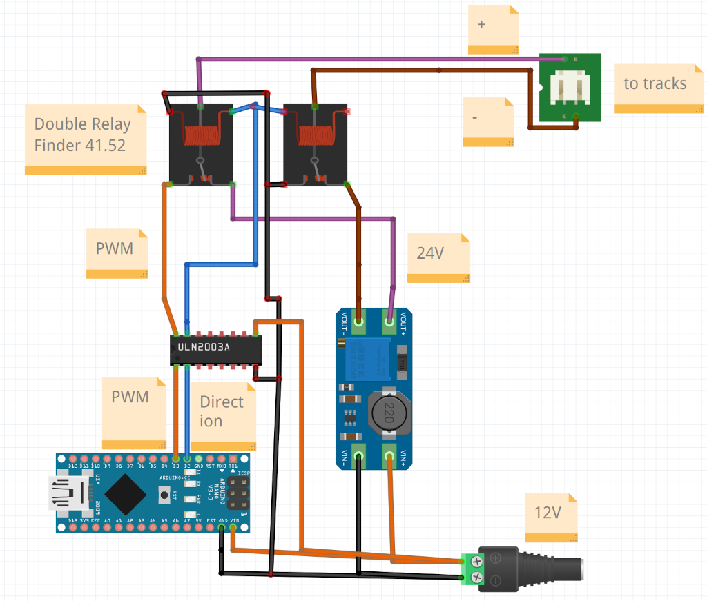The easiest solution with parts I have at home that I could come up with is to use pulse-width modulation (PWM) for speed control from a microcontroller. For changing direction I need 24V. For this I’ll use a step-up boost converter. A double relay switches between the driving mode and direction change in order to put that brief 24V pulse for direction changing onto the track.
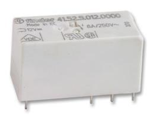 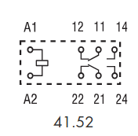The schematic of this actually looks much more complicated, than it is. It is actually much simpler than normal motor controls with an H-Bridge that would have to swap the polarity of the wires. The ULN2003 darlington transistor array is used to drive the high-power circuits from the low-power microcontroller ports. The Arduino Nano microcontroller board can handle 12V with its built in voltage regulator, so we don’t need an additional voltage regulator.
Note that the ULN2003 is just barely enough to drive the train. Each channel is rated for 0.5 A. From my experiemnts with the lab power supply I found that the train takes roughly 0.42 A when starting and around 0.3 A when in motion. If we add a second train we’d exceed the rating. I’ve seen someone else use the L293 motor driver [4], but it is rated for 0.6 A which is also not that much higher. I’ve recently acquired a 43 A (orders of magnutude stronger) BTS7960 motor controler to control power drill motors, but it’s a little more expensive and with that kind of power I could probably accidently damage the motor of the train.
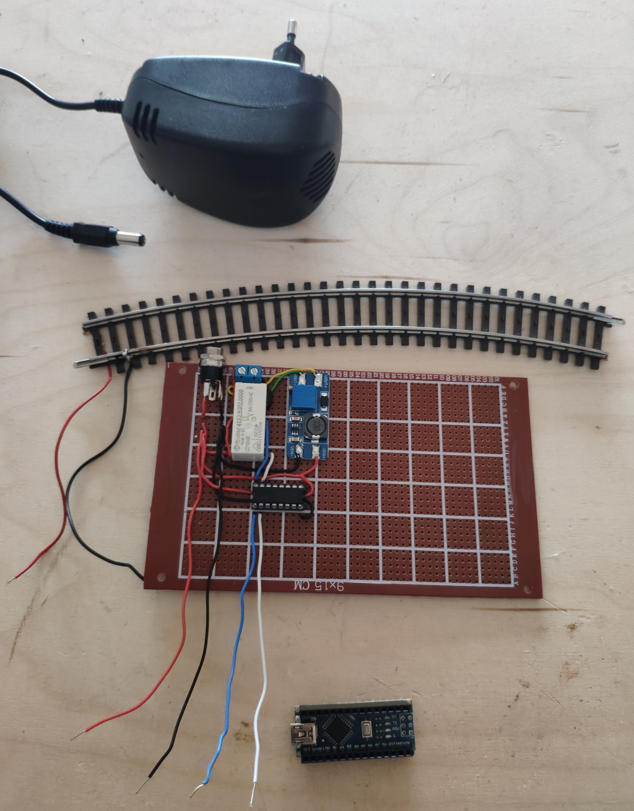We can easily test this circuit without the microcontroller, by touching
- the red with the blue wire to get 12V on the train tracks
- the red with the white wire to get 24V on the train tracks for the direction change
Next we can set up a microcontroller to control the two wires. The blue wire can be connected to the PWM pin to control the speed of the train.
Additional Features
There are some extra features that could be added to this:
- Buttons to control the train could be wired to the Arduino
- an I2C LC-Display coule be added
- the remaining 5 pins of the ULN2003 could be used for track switches.
- a “DFPlayer Mini” sound module could be added. It can then be triggered by the Arduino to play railroad sound effects.
Software
I ran some tests on the Arduino Nano and then programmed it.
Verify the chip still works
Since I’m using Arduino Nanos from various sources and knowing I’ve destoryed pins on some of them, it’s usually good to validate they properly work first.
The following code writes to the serial port and pulses the PWM pin every 100ms.
#include <Arduino.h>
#define PWM_PIN 3 // = PD3 = D3 = PCINT19 = INT1 = PWM
void setup() {
Serial.begin(115200);
Serial.print("[ ] booting\n");
pinMode(PWM_PIN, OUTPUT);
}
void loop() {
Serial.print(".\n");
digitalWrite(PWM_PIN, HIGH);
delay(100);
digitalWrite(PWM_PIN, LOW);
delay(100);
}
In order to not have to bother with clicking around in the Arduino IDE and to keep my projects more easily reproducable I flash Arduinos from command-line. For the Arduino Nano I run:
#!/bin/bash
set -e
ACLI=<path-to-arduino-ide>/arduino-ide_2.3.2_Linux_64bit/resources/app/lib/backend/resources/arduino-cli
sudo chmod a+rw /dev/ttyUSB0
$ACLI compile --fqbn arduino:avr:nano software/software.ino
$ACLI upload --verbose -p /dev/ttyUSB0 --fqbn arduino:avr:nano:cpu=atmega328old software/software.ino
$ACLI monitor -p /dev/ttyUSB0 -c baudrate=115200
The serial monitor received data as expected.
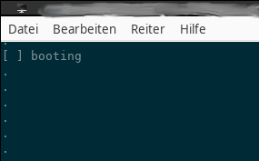I attached the oscilloscope
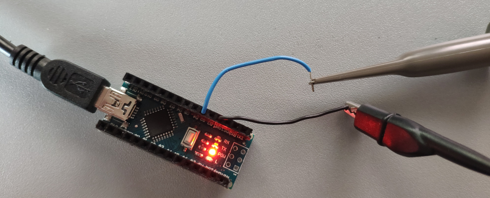and got a square wave signal
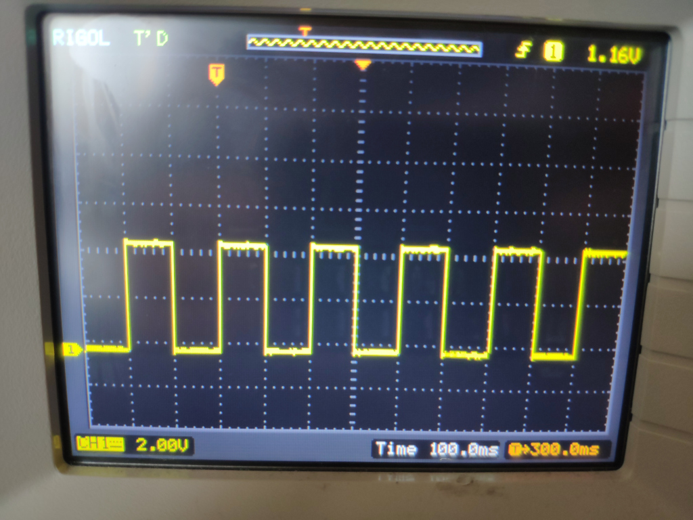So this one is good enough for this project.
Setup PWM and verify
To control the speed of the train I’ll be using pulse-width- modulation (PWM), so I checked that it works next.
The idea here is to vary or “pulse” the signal coming from the microcontroller over time. If we want to run the train faster we use wider pulses. If we want it to go slower we use narrower pulses. On the Arduino Nano we can vary the pulse width from 0 to 1023.
To test the PWM signal I’ve changed the code to this:
#include <Arduino.h>
#define PWM_PIN 3 // = PD3 = D3 = PCINT19 = INT1 = PWM
unsigned long pwmValue = 0;
void setup() {
Serial.begin(115200);
Serial.print("[ ] booting\n");
pinMode(PWM_PIN, OUTPUT);
}
void loop() {
Serial.print(".\n");
pwmValue += 10;
if(pwmValue > 1023) {
pwmValue = 1;
}
analogWrite(PWM_PIN, pwmValue);
delay(10);
}
On the oscillocope we can see the varying pulse-widths. They start off narrow and become wider to the right as expected.
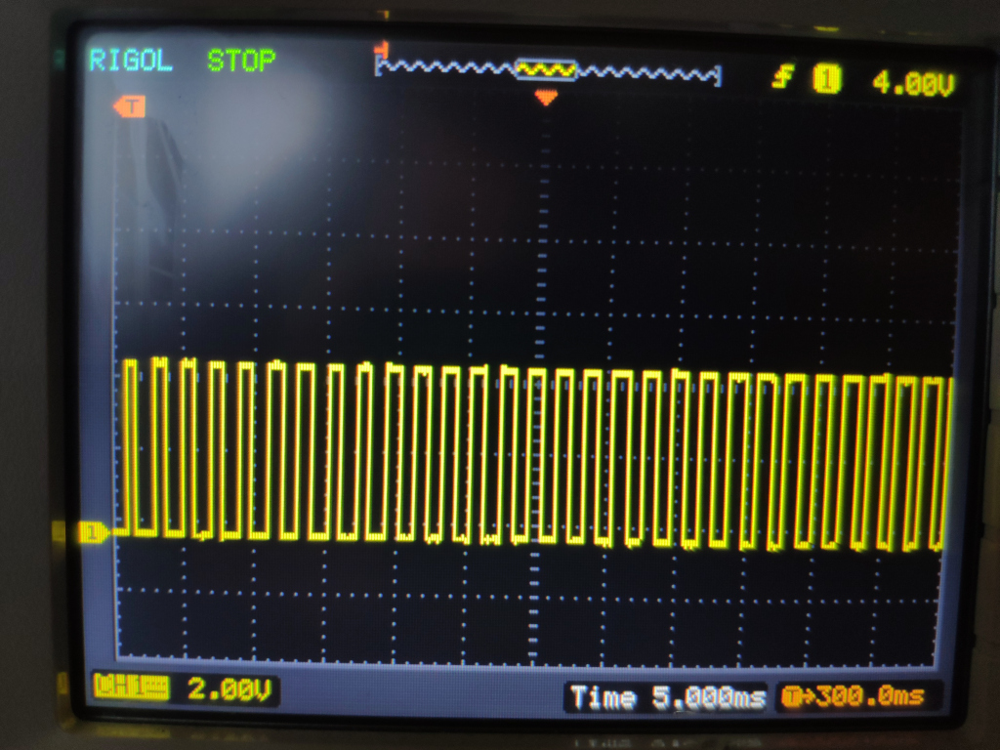Progress
Conclusion
Driving these trains without the original equipement turned out much easier than I had anticipated.
In my view most of the allure of model railway systems is on the landscaping and having nice 1:87-scale items, realistic looking grad and trees to put in it. For this it is sufficient to have speed control, direction change and one or two trains on the same or separated track sections.
I might follow up with some track switches and then connect them to the transistor array to control them.
1] https://de.wikipedia.org/wiki/M%C3%A4rklin 2] https://manuall.de/lego-set-4564-trains-guterzug/#close 3] http://www.hpw-modellbahn.de/gleistechnik/gleis02.htm 4] https://do-it-yourself.net/html/piko.html 5] https://modellbahning.de/modellbahn/modellbahn-gleis-geometrie/